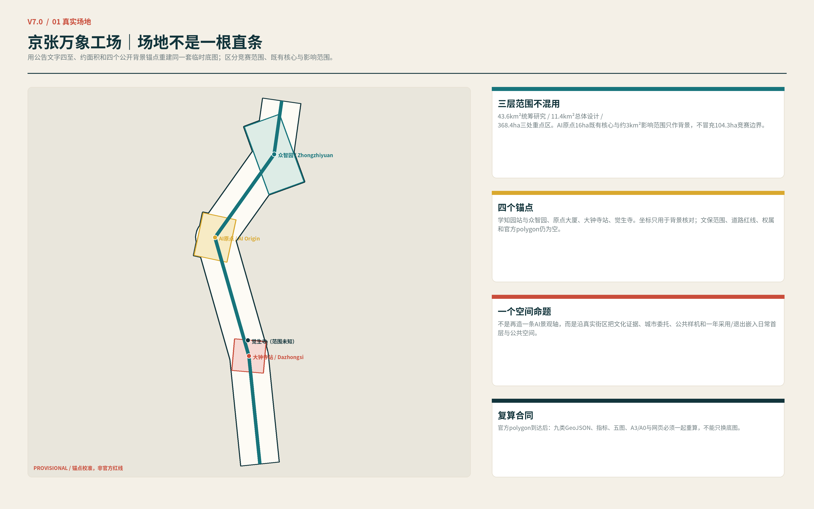
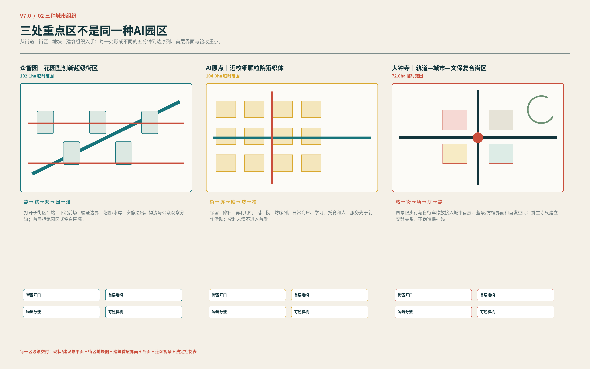
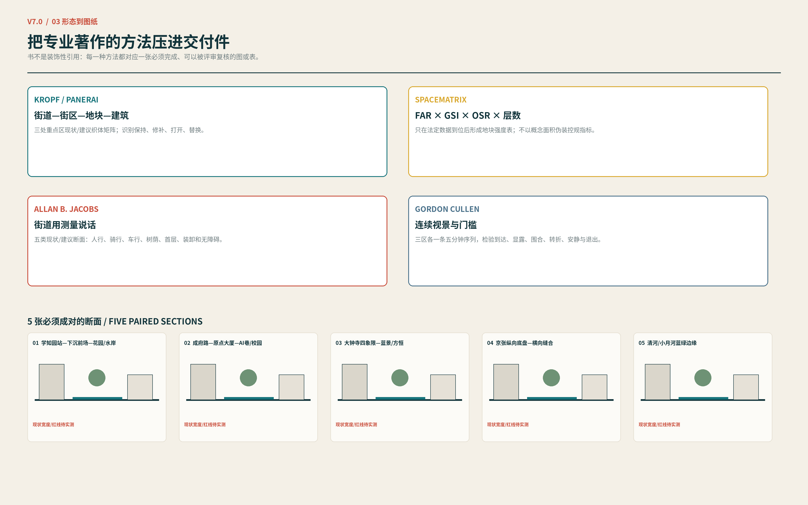
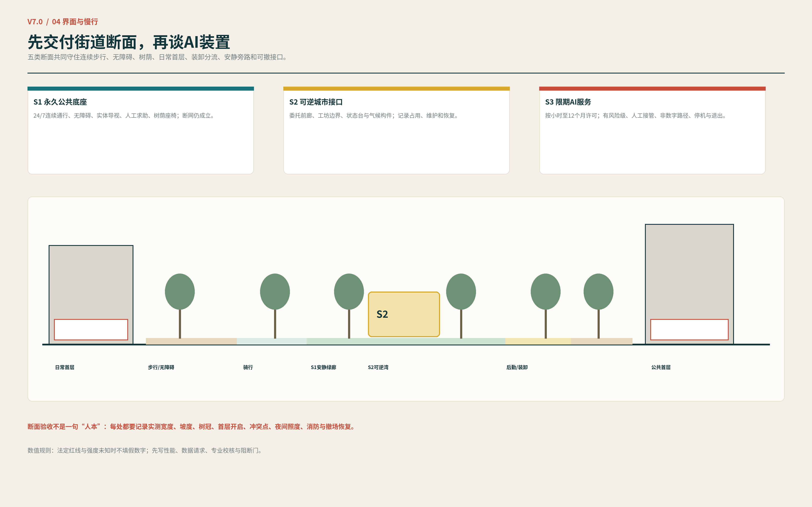
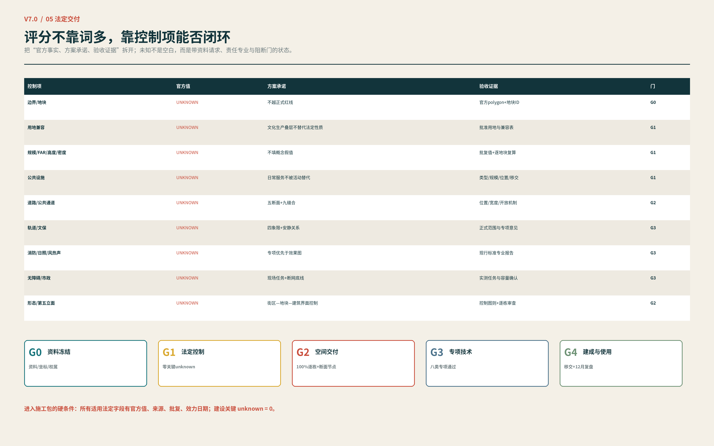

真实场地 / SITE EVIDENCE

三种城市组织 / THREE URBAN TISSUES

形态方法 / MORPHOLOGY

界面断面 / SECTIONS

法定交付 / STATUTORY DELIVERY

静态验收索引 / REVIEW INDEX
总览地图与三层范围共同校验重点区域；用地分区、交通慢行、蓝绿公共空间、建筑与更新项目分图复核。AI 场景、核心指标和任务覆盖保持结构化对应。
11.40 km² · 11.3664% 概念蓝绿覆盖 · 1.1601% 概念公共空间覆盖
自检状态
deterministic、spatial、visual、professional 四门以当前提交包的本地与可信 CI 结果为准。
来源
公告、官方政策与规划技术文件的完整索引见 sources.json 与 standard_matrix.json。
假设
当前范围与三处重点区均为临时几何；组织方未提供精确 polygon 前不得用于法定或工程决策。